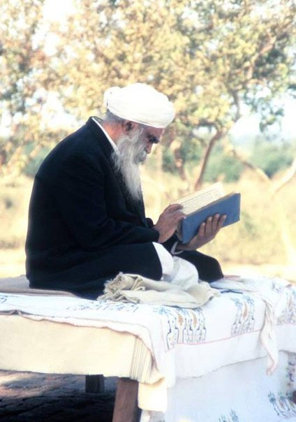

Книги Сант Кирпал Сингха, переведённые на русский язык

- БОГОЧЕЛОВЕК.doc
- Великий Святой Баба Джаймал Сингх. Его жизнь и …
- Венец Жизни.doc
- Колесо Жизни.docx
- Молитва. Её природа и техника..doc
- Оджас.doc
- Секрет Смерти.docx
- Что такое духовность.doc
- Утренние беседы.doc
Файлы тут: http://vk.com/wall-55206711_96 и тут:
BOGOChELOVEK.doc Chto_takoe_dukhovnost.doc Koleso_Zhizni.docx Molitva_Eyo_priroda_i_tekhnika.doc Odzhas.doc Sekret_Smerti.docx Utrennie_besedy.doc Veliky_Svyatoy_Baba_Dzhaymal_Singkh_Ego_zhizn_i.doc Venets_Zhizni.doc

- Венец жизни. Исследование по йоге.pdf (на русском)
Файл тут: http://vk.com/wall-55206711_94 и тут: Kirpal_-_Venets_zhizni_Issledovanie_po_yoge.pdf